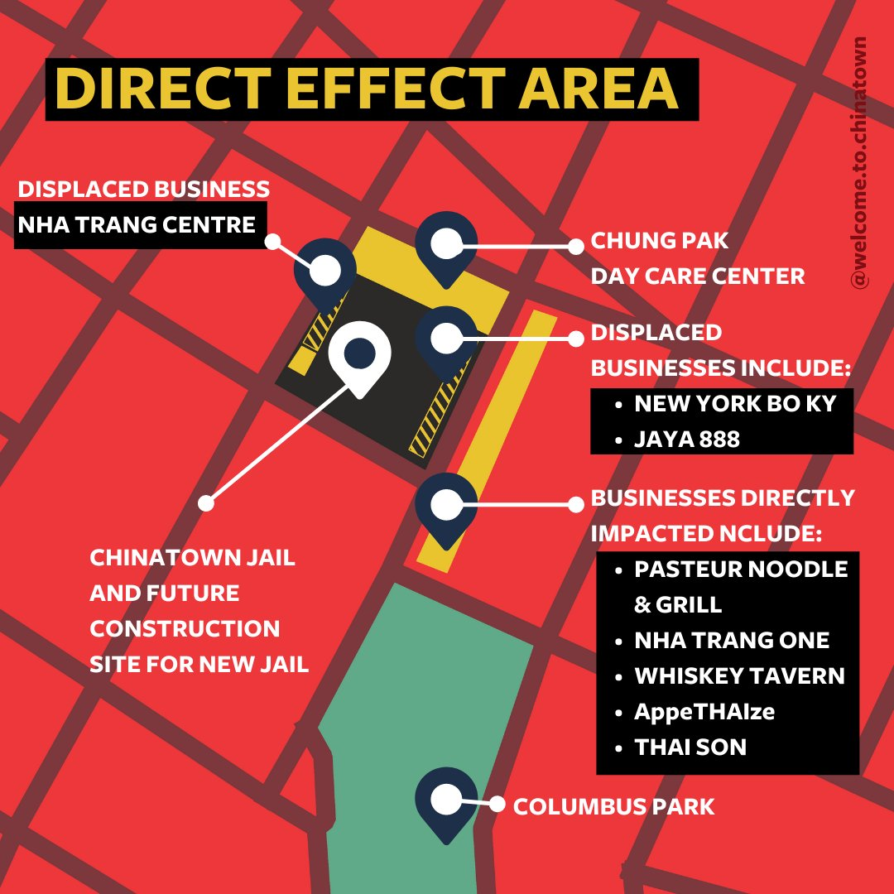

The goal is to stop the construction of the megajail in Chinatown, New York.
The general belief is that jails, are kind of a neccessary evil. So why is it so bad that we're trying to mass incarcerate criminals-- why is it so bad that we want to lock up the "bad guys?"
Well, for one, the construction of this jail will heavily impact Chinatown's demographic, especially the area the jail will be located in, where a dense population of Asian Americans currently reside. Not only are there numbers of seniors living in the area, there are several businesses as well as Columbus Park, which many locals are familiar with. These people will be heavily impacted by the construction of a large jail.
Worse, America's jail system isn't known to go swimmingly. Jails are overcrowded, and have a history of incarcerating people for very small, minor offenses where they end up in these jails for a longer time than necessary.
According to the brennancenter.org,
"The United States has less than 5 percent of the world’s population, yet nearly 25 percent of its prisoners. Mass incarceration has crushing consequences — racial, economic, social — and it doesn’t make us safer. The Brennan Center creates innovative solutions, driven by data, to end mass incarceration.
Mass incarceration rips apart families and communities, disproportionately hurts people of color, and costs taxpayers $260 billion a year."
